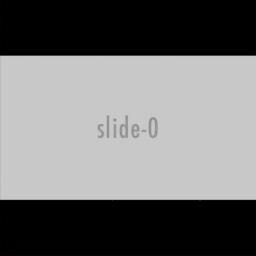

{kind=link}
Table Of Contents
Carousel(翻訳済み)¶
バージョン 1.4.0 で追加.
class:Carousel widgetはスライド間でスワイプできる古典的なモバイル向けカルーセルビューを提供します。 カルーセルに任意のコンテンツを追加して水平または垂直に移動できます。 カルーセルはページをシーケンスまたはループで表示できます。
例:
from kivy.app import App
from kivy.uix.carousel import Carousel
from kivy.uix.image import AsyncImage
class CarouselApp(App):
def build(self):
carousel = Carousel(direction='right')
for i in range(10):
src = "http://placehold.it/480x270.png&text=slide-%d&.png" % i
image = AsyncImage(source=src, allow_stretch=True)
carousel.add_widget(image)
return carousel
CarouselApp().run()
バージョン 1.5.0 で変更: カルーセルは ScrollView のようなアクティブな子をサポートするようになりました。 Carousel.scroll_timeout および Carousel.scroll_distance プロパティに従ってスワイプジェスチャを検出します。
加えて、スライドコンテナはAPIによって露出されません。 影響を受けるプロパティは、 Carousel.slides 、Carousel.current_slide 、 Carousel.previous_slide`および :attr:`Carousel.next_slide です。
-
class
kivy.uix.carousel.Carousel(**kwargs)[ソース]¶ ベースクラス:
kivy.uix.stencilview.StencilViewカルーセルクラス。 詳細については、モジュールのマニュアルを参照してください。
-
anim_cancel_duration¶ スワイプ動作が受け入れられないときのアニメーションの時間を定義します。 これは一般に、ユーザーが十分に大きなスワイプを作成しないときです。
min_moveを参照してください。anim_cancel_durationはNumericPropertyで、デフォルトは0.3です
-
anim_move_duration¶ ページ間のカルーセルアニメーションの時間を定義します。
anim_move_durationはNumericPropertyで、デフォルトは0.5です
-
anim_type¶ 次/前のスライドにアニメートする際に使用するアニメーションのタイプ。 これは
AnimationTransition関数の名前でなければなりません。anim_typeはStringPropertyで、デフォルトは ‘out_quad’ です。バージョン 1.8.0 で追加.
-
current_slide¶ 現在表示されているスライドです。
current_slideはAliasPropertyです。バージョン 1.5.0 で変更: このプロパティはスライドコンテナを公開しなくなりました。あなたが 追加したwidgetを返します。
-
direction¶ スライドが注文される方向を指定します。 これは、ユーザーが1つのスライドから次のスライドに移動するためにスワイプする方向に対応します。 right , left , top , または bottom のいずれかになります。 たとえば、デフォルト値の right では2番目のスライドは最初のスライドの右にあり、ユーザーは2番目のスライドに移動するために右から左にスワイプします。
directionはOptionPropertyで、デフォルトは ‘right’ です。
-
ignore_perpendicular_swipes¶ 垂直方向のスワイプを無視します。
ignore_perpendicular_swipesはBooleanPropertyで、デフォルトはFalseです。バージョン 1.10.0 で追加.
-
index¶ インデックスに基づいて現在のスライドを取得や設定をします。
indexis anAliasPropertyand defaults to 0 (the first item).
-
loop¶ カルーセルを無限にループできるようにします。 Trueの場合ユーザーが最後のページを超えてスワイプしようとすると最初のページに戻ります。 Falseの場合は最後のページにとどまります。
loopはBooleanPropertyでデフォルトはFalseです。
-
min_move¶ タッチがスワイプジェスチャーとみなされ、カルーセルのコンテンツが変更される前にカバーする最小距離を定義します。 これはカルーセルの幅の一部として表されます。 動きがこの最小値に達しない場合は動きはキャンセルされ、コンテンツは元の位置にもどります。
min_moveis aNumericPropertyand defaults to 0.2.
-
next_slide¶ カルーセルの次のスライド。 現在のスライドがカルーセルの最後のスライドであればNoneになります。 この順序はスライドが追加される順序を反映しています。スライドの表示は
directionプロパティによって異なります。next_slideはAliasPropertyです。バージョン 1.5.0 で変更: このプロパティはスライドコンテナを公開しなくなりました。あなたが 追加したwidgetを返します。
-
previous_slide¶ カルーセルの前のスライド。 現在のスライドがカルーセルの最初のスライドである場合は、Noneになります。 この順序は、スライドが追加される順序を反映しています。スライドの表示はdirectionプロパティによって異なります。
previous_slideはAliasPropertyです。バージョン 1.5.0 で変更: このプロパティは、スライドコンテナを公開しなくなりました。 あなたが追加したwidgetを返します。
-
scroll_distance¶ Carouselをスクロールする前に移動する距離（ピクセル単位）。 距離が移動すると直ちに、Carouselはスクロールし始め、タッチイベントは子には行きません。 この値はターゲットデバイスの画面のdpiに基づいて設定することをお勧めします。scroll_distanceはNumericPropertyで、デフォルトは 20dpです。バージョン 1.5.0 で追加.
-
scroll_timeout¶ scroll_distanceをトリガできるタイムアウトをミリ秒単位で指定します。ユーザーがタイムアウト内にscroll_distanceを移動していない場合はスクロールは行われずにタッチイベントは子に移動します。scroll_timeoutはNumericPropertyでデフォルトは200 （ミリセカンド）です。バージョン 1.5.0 で追加.
-
slides¶ List of slides inside the Carousel. The slides are the widgets added to the Carousel using the
add_widgetmethod.slidesはListPropertyであり読み取り専用です。
-